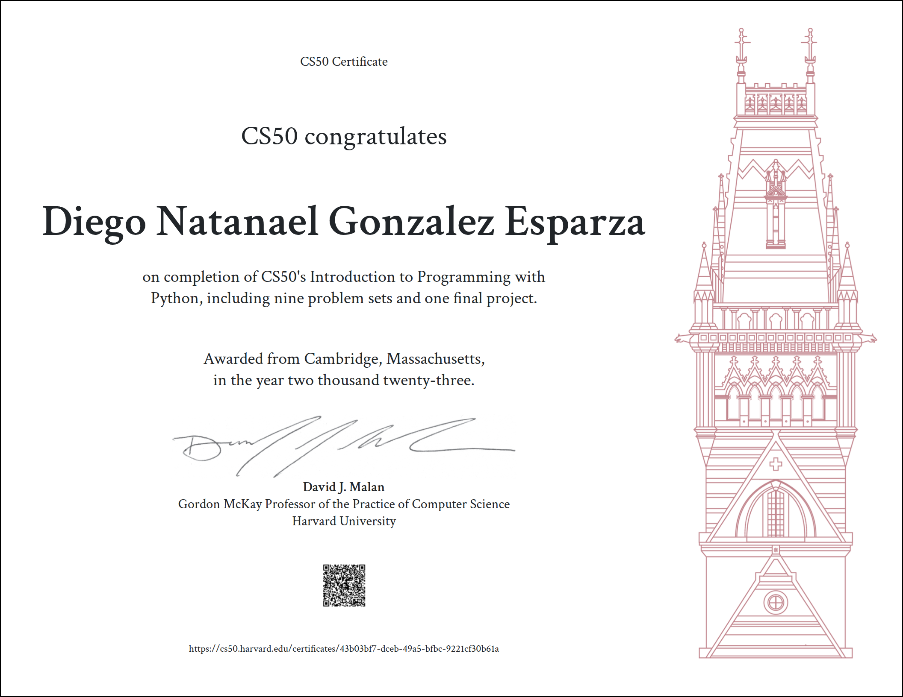
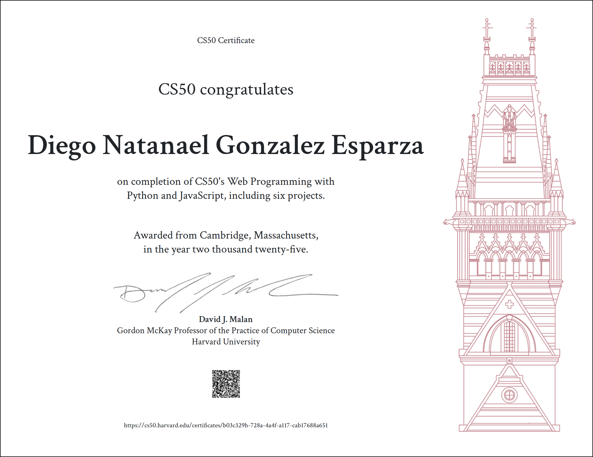
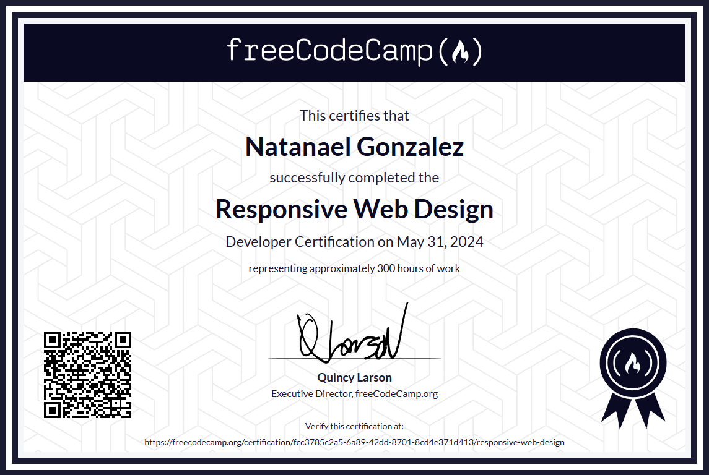

Approved
Échame
la Mano
RoleTeam Lead — 6 Engineers
FocusLSM sign-language learning app. Led the team from architecture to delivery.
Metric100% build stability across all releases
IT Operations & Software Engineering
IT Operations & Software Engineering Intern building systems that eliminate manual work. I engineer automation tools, lead development teams, and bridge the gap between infrastructure and software.
Automating infrastructure and building internal tools.
2024 – Present


Currently open to new roles & freelance · Aguascalientes, Mexico